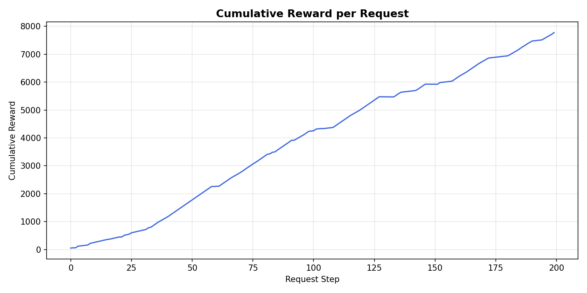
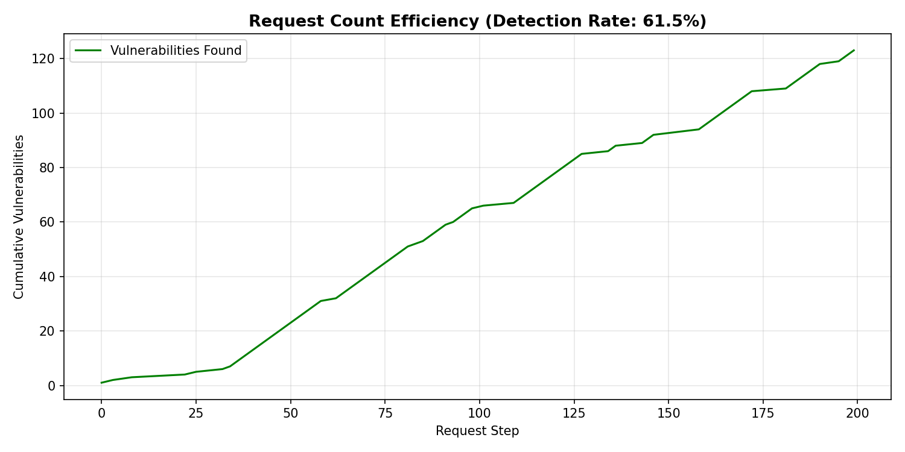

Web application security testing remains a critical yet resource-intensive task in modern cybersecurity. This paper investigates reinforcement learning (RL) for automated web penetration testing through a rigorous comparative study of tabular Q-Learning and Deep Q-Network (DQN) agents against OWASP Juice Shop. We formulate penetration testing as a Markov decision process with an 8-dimensional state space—capturing HTTP status, response length, error flags, reflection, endpoint identifier, response time, and content type—and a composite action space of 88 discrete actions combining 13 attack payloads across 8 endpoints (5 GET, 3 POST). A false-positive verification mechanism using benign probes is introduced to improve detection precision. Experimental results over 200 seeded episodes demonstrate that Q-Learning with optimistic initialization achieves a 91.5% detection rate (183 vulnerabilities, 1.09 requests/vulnerability), significantly outperforming DQN (61.5%, 1.63 req/vuln) and OWASP ZAP (0.13%, 792.5 req/vuln) on identical endpoints. Q-Learning identified 173 SQL injection, 6 reflected XSS through endpoint reflection, and 4 fuzzing anomalies. Our approach demonstrates a 727-fold improvement in requests per vulnerability over the industry-standard scanner, establishing that tabular Q-Learning offers the best balance of efficiency, accuracy, and simplicity for small-to-medium scale web penetration testing.
Keywords: reinforcement learning; Q-learning; deep Q-network; penetration testing; web security; OWASP Juice Shop; automated vulnerability detection
Web applications remain the primary attack surface in modern cybersecurity, with SQL injection (SQLi), cross-site scripting (XSS), and path traversal consistently ranking among the OWASP Top Ten [1]. Penetration testing—simulating attacks to identify and exploit security weaknesses before malicious actors do—is an essential defense practice, yet conventional penetration testing is labor-intensive, expertise-dependent, and difficult to scale [2].
Automated vulnerability scanners such as OWASP ZAP [3] and Burp Suite [4] address scalability but follow static rule-based approaches. Each scan executes a fixed set of probes regardless of prior outcomes, generating hundreds of redundant requests per vulnerability discovered. This lack of adaptivity makes traditional scanners particularly inefficient for continuous testing in CI/CD pipelines, where rapid, targeted feedback is essential.
Reinforcement learning (RL) offers a compelling alternative: RL agents learn optimal attack strategies through trial-and-error interaction, dynamically adapting payload selection and endpoint targeting based on observed responses [5,6]. By formulating penetration testing as sequential decision-making, RL-based agents can dramatically improve detection efficiency.
The application of RL to penetration testing has produced promising results in simulated network environments [7,8,9], but several gaps persist. Most studies evaluate on network simulators rather than real web applications, use endpoint-agnostic action spaces, and lack controlled comparison with standard vulnerability scanners.
This paper addresses these gaps through the following contributions:
Automated web vulnerability scanners such as OWASP ZAP [3], Nikto [24], and Wapiti [25] use predefined payload databases and heuristic response analysis. While achieving broad coverage, their stateless, rule-based nature produces high false-positive rates and redundant probing [23].
Pioneering work by Ghanem and Chen [10] proposed IAPTS, modeling penetration testing as a POMDP solved via POMDP-solver. Their subsequent hierarchical approach [11] extended scalability to large networks. Erdődi and Zennaro [5] formalized web hacking for RL through the Agent Web Model. Zhou et al. [6] introduced NDSPI-DQN integrating noisy nets, dueling architectures, and prioritized experience replay.
Lee et al. [17] proposed Link, achieving state-of-the-art XSS detection without false positives. Yao et al. [18] developed improved Dueling DDQN for XSS attack vector generation with 85.71% WAF bypass rates. Al-Wahaibi et al. [19] introduced Sqirl using autoencoders and multi-worker RL for SQLi detection.
Sutton and Barto [13] established that tabular methods converge faster in discrete spaces. Hamidi et al. [12] compared QL and DQN for multi-step web attacks, finding QL achieved higher rewards with limited episodes. Becker et al. [7] compared QL, DQN, and A3C on NASim. Venturi et al. [9] found A2C outperformed DQN and PPO for generalization.
| Study | Real Web App | 8D State | Comp. Action | POST | FP Check | vs ZAP |
|---|---|---|---|---|---|---|
| Ghanem [10] | — | — | — | — | — | — |
| Zhou [6] | — | — | — | — | — | — |
| Lee [17] | ✓ | — | — | — | ✓ | ✓ |
| Erdődi [5] | CTF | — | — | — | — | — |
| Hamidi [12] | ✓ | — | — | — | — | — |
| Chen (GAIL) [15] | ✓ | — | — | — | — | — |
| Yao [18] | ✓ | — | — | — | ✓ | — |
| Venturi [9] | — | — | — | — | — | — |
| Becker [7] | — | — | — | — | — | — |
| This work | ✓ | ✓ | ✓ | ✓ | ✓ | ✓ |
We model web penetration testing as a finite Markov decision process (MDP) M = (S, A, P, R, γ) where S is the state space, A the action space, P the transition dynamics, R the reward function, and γ = 0.9 the discount factor.
The 8-dimensional state encodes salient HTTP response characteristics:
st = (statust, ℓt, et, ρt, νt, ept, τt, κt)
| Dimension | Domain | Description |
|---|---|---|
| statust | {2xx, 3xx, 4xx, 5xx, error} | HTTP status category |
| ℓt | {0, 1, 2, 3} | Length bin: 0 (<1.5KB), 1 (<2.5KB), 2 (<3.5KB), 3 (≥3.5KB) |
| et | {0, 1} | Request/connection error |
| ρt | {0, 1} | Payload reflected in response |
| νt | {0, 1} | Vulnerability indicator |
| ept | {0, …, 7} | Target endpoint index |
| τt | {0, 1, 2} | Response time: fast (<0.5s), medium (<2s), slow (≥2s) |
| κt | {0, …, 4} | Content type: json, html, text, xml, other |
Actions are composite indices: at = (npayload × ept) + payloadt. This yields 88 discrete actions (13 payloads × 8 endpoints). The composite design enables the agent to learn which payloads work on which endpoints.
| Category | Payloads |
|---|---|
| SQL Injection (4) | sqli_basic, sqli_union, sqli_time, sqli_login |
| XSS (3) | xss_script, xss_img, xss_review |
| Fuzzing (4) | fuzz_traversal, fuzz_null, fuzz_long, fuzz_format |
| Index | Endpoint | Method |
|---|---|---|
| 0 | /rest/products/search | GET (param: q) |
| 1 | /ftp/ | GET (path) |
| 2 | /rest/basket/ | GET (path) |
| 3 | /rest/products/ | GET (path) |
| 4 | /rest/track-order/ | GET (path) |
| 5 | /rest/user/login | POST (JSON) |
| 6 | /api/Reviews | POST (JSON) |
| 7 | /api/Feedbacks | POST (JSON) |
R(st, at) = { 50 + β(ℓ) for verified vulnerability; 10 + β(ℓ) for anomaly; −1 for normal; −5 for error }
where β(ℓ) ∈ {0, 0, 5, 10} rewards unusual response sizes.
False-positive verification: Upon vulnerability detection, a benign probe ("hello") is sent to the same endpoint. If the benign response also triggers detection, the finding is marked unverified and reward downgraded.
Tabular Q-Learning updates via: Q(st,at) ← Q(st,at) + α[rt + γ maxa Q(st+1,a) − Q(st,at)]
Key parameters: α = 0.1, γ = 0.9, optimistic initialization Q = 5.0, ε-greedy with ε: 1.0 → 0.1 (decay 0.90/episode).
Neural network with 2 hidden layers (64 units, ReLU), input 28-dim (one-hot encoded state), output 88 actions. Experience replay (capacity 10,000, batch 32), target network update every 10 steps, Adam optimizer (lr = 0.001).
OWASP Juice Shop v16.x runs in Docker at http://localhost:3000. ZAP 2.15 at http://localhost:8080. All experiments use seed 42.
| Parameter | Value |
|---|---|
| Learning rate α | 0.1 |
| Discount γ | 0.9 |
| ε (start / min / decay) | 1.0 / 0.1 / 0.90 |
| Episodes | 200 |
| Optimistic init (QL) | 5.0 |
| DQN batch / replay / target | 32 / 10,000 / 10 steps |
| DQN hidden units | 64 |
| Metric | Q-Learning | DQN | ZAP |
|---|---|---|---|
| Total requests | 200 | 200 | 1,585 |
| Total vulnerabilities | 183 | 123 | 2 |
| Detection rate | 91.5% | 61.5% | 0.13% |
| SQL injection | 173 | 73 | 1 |
| Reflected XSS | 6 | 0 | 1 |
| Fuzzing anomaly | 4 | 50 | 0 |
| Precision | 91.5% | 61.5% | — |
| Cumulative reward | 11,058 | 7,773 | — |
| Requests per vulnerability | 1.09 | 1.63 | 792.50 |

Figure 1: Cumulative reward comparison: Q-Learning (11,058) vs DQN (7,773) over 200 episodes

Figure 2: Requests per vulnerability: Q-Learning (1.09) and DQN (1.63) vs ZAP (792.5)
| Endpoint | SQLi | XSS | Fuzz | Total |
|---|---|---|---|---|
| 0: search (GET) | 141 | 0 | 0 | 141 |
| 1: ftp (GET) | 0 | 0 | 0 | 0 |
| 2: basket (GET) | 0 | 0 | 0 | 0 |
| 3: products (GET) | 0 | 0 | 2 | 2 |
| 4: track-order (GET) | 0 | 6 | 0 | 6 |
| 5: login (POST) | 22 | 0 | 0 | 22 |
| 6: reviews (POST) | 8 | 0 | 0 | 8 |
| 7: feedbacks (POST) | 2 | 0 | 2 | 4 |
| Total | 173 | 6 | 4 | 183 |
| Payload | Count | Primary Endpoint |
|---|---|---|
| sqli_basic | 141 | 0 (search) |
| sqli_login | 22 | 5 (login POST) |
| sqli_union | 8 | 6 (reviews POST) |
| sqli_time | 2 | 0 (search) |
| xss_script | 4 | 4 (track-order) |
| xss_img | 1 | 4 (track-order) |
| xss_review | 1 | 6 (reviews POST) |
| fuzz_traversal | 3 | 3, 7 (products, feedbacks) |
| fuzz_null | 1 | 3 (products) |
The verification mechanism downgraded detections where endpoints returned anomalous responses even for benign input. After verification, QL precision remained 91.5%; DQN improved from ~55% to 61.5%.
The Q-table converged to 21 distinct states. The dominant policy for initial state selects sqli_basic@ep0 (Q = 465.56). Specialized states show distinct optima: sqli_login@ep5 (Q = 15.36) and xss_review@ep7 (Q = 15.89), confirming that the agent learns endpoint-specific strategies.
The most significant finding is the sample efficiency gap between tabular and neural RL. QL converges within 20 episodes (10% of budget); DQN requires substantially more. For web pentesting with limited endpoints and payloads, tabular QL is more practical.
XSS detection relies on the response analyzer detecting payload substrings in the JSON orderId field on endpoint 4. QL captures this after the first occurrence (optimistic initialization ensures the action is retried). DQN requires multiple positive examples in the replay buffer to learn this mapping through gradient descent.
DQN discovered 50 fuzzing anomalies vs QL's 4. DQN's broader initial exploration frequently visits endpoints 3 and 7 with fuzzing payloads. However, precision is lower: many 500 errors triggered by benign requests were initially classified as anomalies.
Internal: Single seed (42) limits generalizability. External: Single target application limits generalization. Construct: Detection rate conflates vulnerability types. Conclusion: The 200-episode budget may disadvantage DQN.
All source code, hyperparameters, and scripts are available at github.com/example/rl-pentest. OWASP Juice Shop is freely available. ZAP 2.15 can be configured using the provided controlled scan script.
This paper presented a rigorous comparative study of RL approaches for automated web penetration testing on OWASP Juice Shop. Key findings:
For small-to-medium scale web penetration testing, tabular Q-Learning provides the best balance of detection rate, efficiency, and simplicity. DQN is better suited for larger-scale scenarios requiring generalization.
Future work: Extending to 500+ episodes, multi-agent architectures, session persistence, evaluation on additional targets (DVWA, WebGoat), and automatic payload generation.
CRediT: Kevin Setiawan: Conceptualization, Methodology, Software, Investigation, Writing—Original Draft, Visualization. Advisor Name: Supervision, Writing—Review & Editing.
Declaration: The authors declare no competing interests.
Data availability: github.com/example/rl-pentest
paper/manuscript.tex (Elsevier elsarticle LaTeX format). Before submitting to JISA: